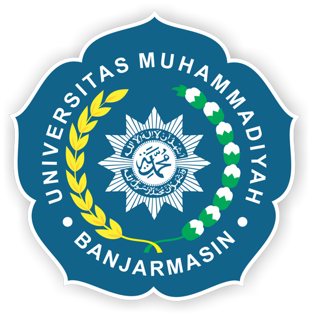

Program Studi S1 Informatika

KEUNGGULAN Program Studi INFORMATIKA :
- Kurikulum dan Silabus matakuliah terupdate sesuai dengan kebutuhan para Stakeholder
- Proses belajar dilakukan dengan cara yang inovatif dan kreatif dengan melibatkan mahasiswa secara aktif
- Mahasiswa diajarkan tentang pengetahuan, konsep, dan kemampuan dalam pembuatan sofware, baik berbasis web maupun desktop
- Pembimbingan penuh di Lab. Komputer agar Mahasiswa dapat memahami secara langsung pengembangan software secara pengelolaan jaringan komputer
STRUKTUR KURIKULUM:
SEMESTER I
[Sustainable Development] [Calculus] [Interpersonal Communications] [Information Technology] [Algorithm and Programming]
SEMESTER II
[Civic Education] [Digital System] [Linier Algebra and Matrice] [Computer Architecture] [Data Structure]
SEMESTER III
[Coumputer Application] [Fundamental Statistic] [Database] [Static Web Programming] [Object-Oriented Programming]
SEMESTER IV
[Human-Computer Interaction] [Decision Support System] [Operating System] [Computer Network] [Visual Programming]
SEMESTER V
[Sofware Engineering] [Image Processing] [Data Security] [Wireless Networks] [Dynamic Web Programming]
SEMESTER VI
[Research Methodology] [Artifical Intelligence] [Web and Networks Security] Elective: [Mobile Device Programming] [Data Mining] [Geographic Information Systems]
SEMESTER VII
[Professional Law and Ethics] [Internship] [Digital Game Design] Elective: [Digital Forensic] [Biometrics] Consentration: [Network Eng.] [Web Development]
SEMESTER VIII
[Field Work Experience] [Final Project]
Universitas Muhammadiyah Banjarmasin menghadirkan Program Studi Informatika yang memiliki keunggulan akademik dan profesional dengan mengintegrasikan nilai-nilai Islam, dalam ilmu pengetahuan, teknologi dan seni untuk menjawab tantangan dan kebutuhan para stakeholder, melalui misi :
- Melaksanakan kegiatan akademik dan profesi yang inovatif,sistematis dan komprehensif berdasarkan ketakwaan terhadap Tuhan Yang Maha Esa dan kecintaan terhadap tanah air untuk pengembangan profesionalisme dan karakter peserta didik.
- Melakukan inovasi dalam kegiatan penelitian dasar dan terapan untuk memajukan kemajuan ilmu pengetahuan, teknologi dan seni (IPTEKS.
- Meyebarluaskan hasil kajian dan inovasi dibidang informatika melalui partisipasi dalam pengabdian kepada masyarakat.
- Mengelola pendidikan dibidang informatika secara efektif dan efisien dalam suasana akademik yang islami dan bermartabat.
BIODATA KEPENGURUSAN HIMPUNAN MAHASISWA TEKNIK INFORMATIKA
Ketua HMTI |
 Siti Ratna Sari
Siti Ratna Sari |
Wakil Ketua HMTI |
Muhammad Fredly Andri |
Sekretaris |
 Zahratun Nupus Zahratun Nupus |
Bendahara |
 Nia Sapitri Nia Sapitri |
Keluarga Besar Himpunan Mahasiswa Teknik Informatika Angkatan 2016

.jpg)
.jpg) copyright © UM Banjarmasin 2017 FK.Teknik 1
copyright © UM Banjarmasin 2017 FK.Teknik 1